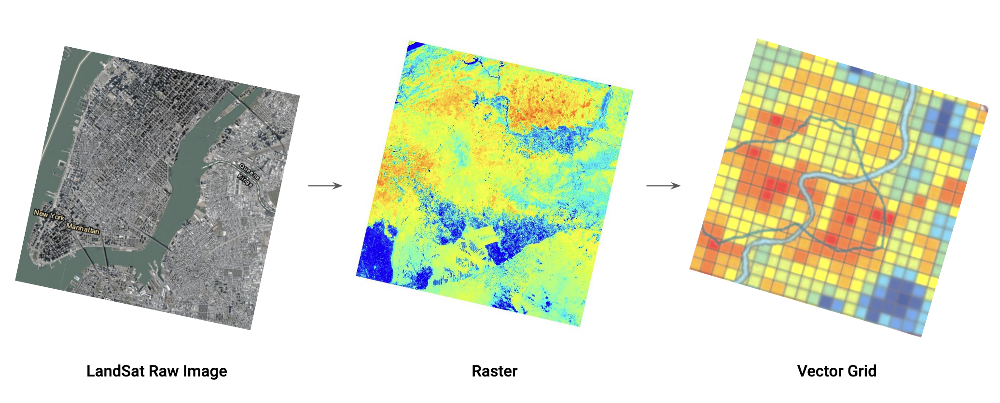
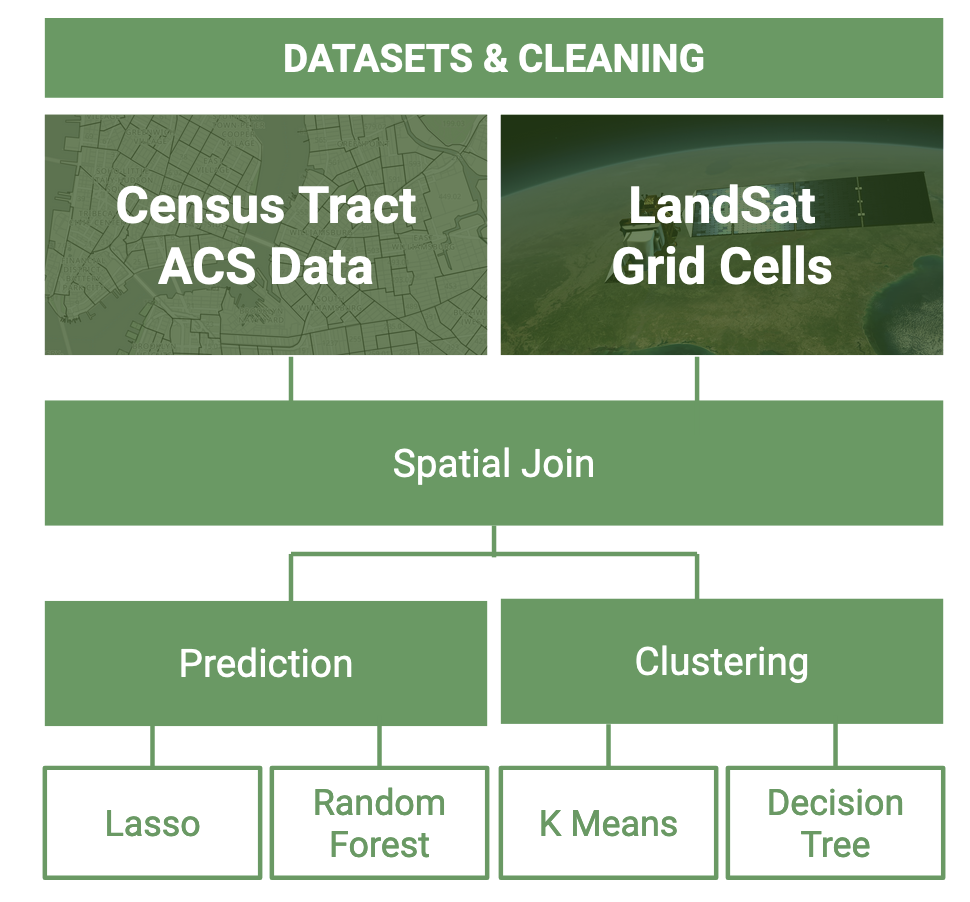

Predicting Surface Temperatures using Machine Learning
Introduction
The Urban Heat Island Effect (UHIE) occurs when impervious surfaces replace areas of vegetation, causing increased surface temperatures in cities relative to surrounding areas. Inequitable green space access across NYC may cause some neighborhoods to be more at-risk for UHIE than others.
Skills Used:ArcGIS, Excel, Python (sci-kit learn), R (dplyr, tidyr, sf), Illustrator, Presentation, Public Speaking
Key Research Questions
Main Research Question:
To what degree can the presence of green space in neighborhoods predict surface temperatures in NYC?
Sub Research Questions:
- Given the difference in amount of green space across the boroughs, which neighborhoods are particularly vulnerable to the Urban Heat Island Effect?
- What are the discrepancies in green coverage between different land uses (e.g. commercial, residential)?
To answer these questions, we extracted raw Landsat data to obtain both heat and vegetation data across New York City.
 After cleaning the raw Landsat data, we conducted 2 parallel workflows on different geographical units to conduct our ML analysis: ACS census tracts and MapPLUTO tax lots. For census tract analysis, we used Lasso and Random Forest models to predict LST with demographic features, and we used K Means and a Decision Tree model to conduct spatial analysis.
For census tract analysis, we used Lasso and Random Forest models to predict LST with demographic features, and we used K Means and a Decision Tree model to conduct spatial analysis.
For tax lot analysis, we reclassified MapPLUTO tax lots into 5 broad categories (Residential, Commercial, Industrial, Public, Vacant) and conducted an OLS regression on these land uses to predict LST.
Results and Implications

Census Tract Analysis
Random Forest model returned the highest test and training results The most important demographic feature in our model was non-family households (but feature importance was still less than 10%) We conducted a spatial analysis K Means clustering and Decision Tree. K Means produced 3 clusters while Decision Tree produced 4 categories.
OLS regression analysis
- Neighborhood green space is a relatively weak predictor for LST
- “Public land use” is the best predictor for LST on a city-wide scale

Conclusions
High-LST census tracts, like our Queens case study, can be identified to implement policies such as greening buildings for high-density apartments (such as those catering to non-family households) and heavy commercial land uses. Further research can consider the limitations of using raw Landsat NDVI data, as we were limited by a few day’s worth of Landsat images per month and even
Project completed with Theresa Yang, Haoche Hung, and Hilary Ho for Boyeong Hong's Spring 2022 Exploring Urban Data with Machine Learning course.
To view poster, see here.
{kind=link}